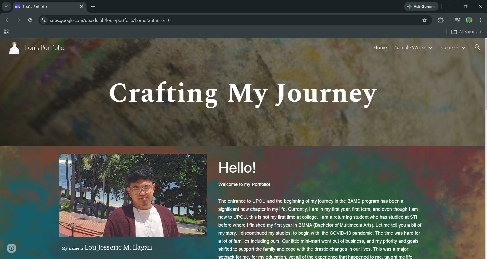
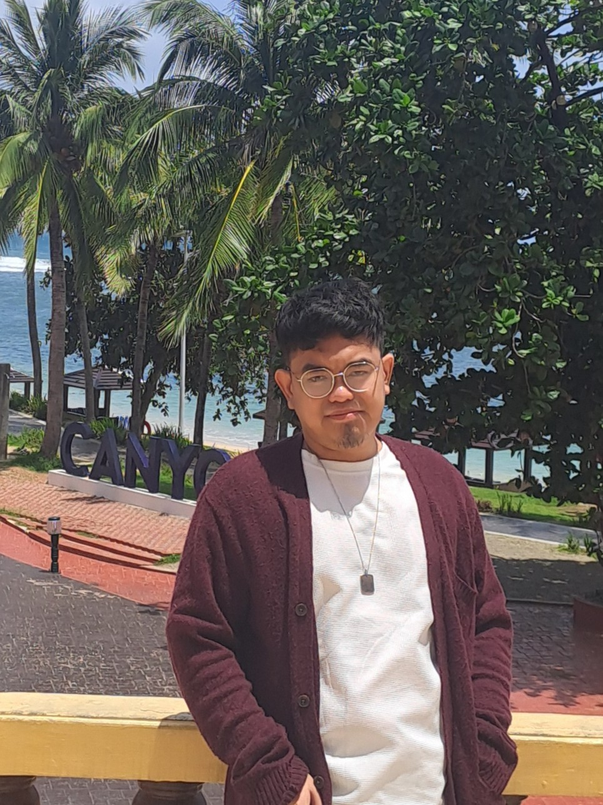
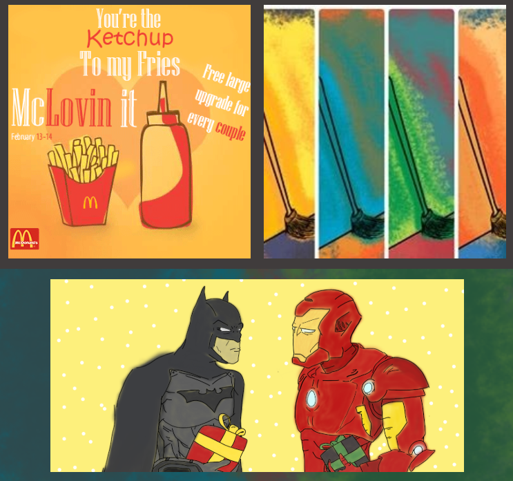
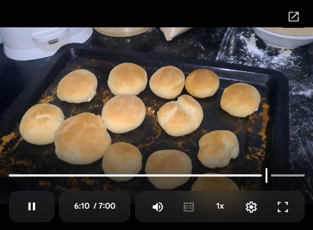
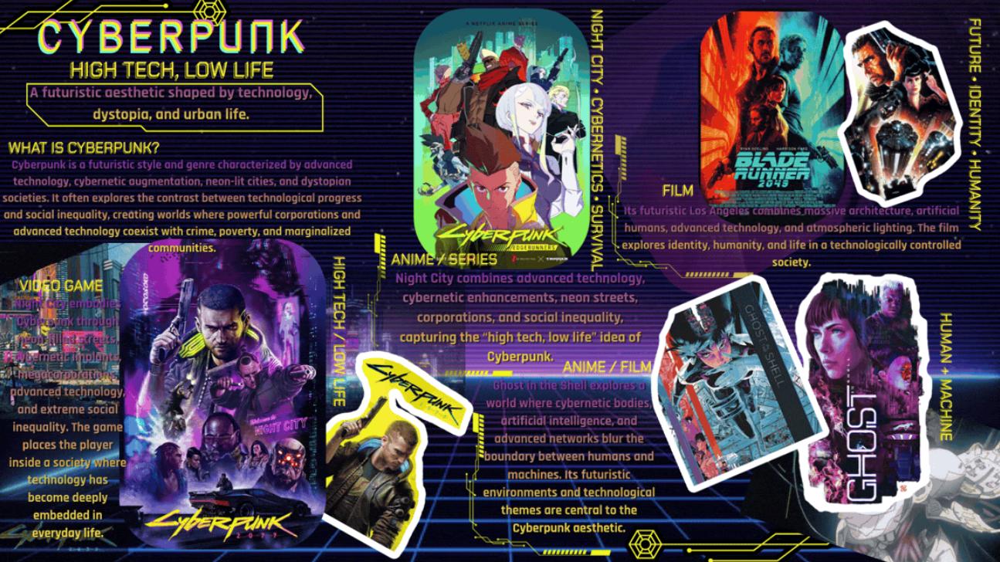

Lou's Portfolio: Crafting My Journey
A personal portfolio website I built on Google Sites. It tells the story of my return to college and my start in the BAMS program, and it collects my sample works and course pages in one place.
Gamer, home cook, and video editor in the making.

Hi! I'm Lou Jesseric, a 26-year-old student who went back to school last year to finish my degree. I'm now in my second year as a Bachelor of Arts in Multimedia Studies (BAMS) student. I live in Caloocan North, near SM Fairview. Going back to college later than most has taught me to make the most of every class, and I'm excited to turn my love for games, food, and editing into real multimedia skills.

A personal portfolio website I built on Google Sites. It tells the story of my return to college and my start in the BAMS program, and it collects my sample works and course pages in one place.

Digital illustrations I made for fun, from a Valentine's poster to Batman and Iron Man fan art.
Date:

A start-to-finish pandesal baking walkthrough showing the ingredients, the tools, and why accurate measuring matters.
Date:

A mood board for MMS 170 on the Cyberpunk aesthetic, mixing games, anime, and film references.
Date: